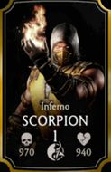

Selecione um personagem
- 
Lio Kang
Ele tem o poder de disparar rajadas ópitcas por um acidente que aconteceu com ele quando criança, mas não consegue controlá-los.
Ele tem o poder de disparar rajadas ópitcas por um acidente que aconteceu com ele quando criança, mas não consegue controlá-los.